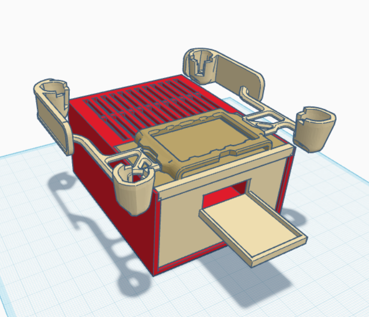
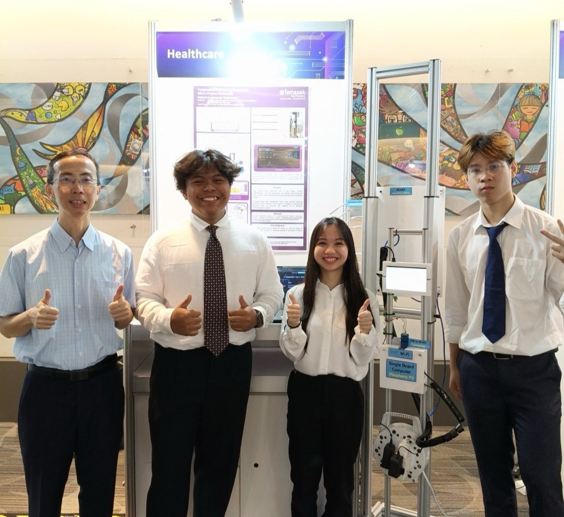

Intro
This is a section of my Major Project from my time in TP
About
Floods are becoming increasingly common in Singapore, often causing damage to both the environment and property. To address this issue, we have designed a smart drone capable of navigating inaccessible areas while equipped with sensors to collect real-time environmental data, including:
- Temperature üå°Ô∏è
- Humidity üí¶
- Visual aerial data üñºÔ∏è
Technology Outline
Our architecture stack is built on the TIG framework (Telegraf, InfluxDB, and Grafana). The ESP32 (server) and Raspberry Pi (client) are connected to the same access point (AP) for seamless data communication.
Image analysis workflow:
Images captured by the drone are transmitted to the Raspberry Pi as Base64-encoded strings.
The Raspberry Pi then packages these images into a JSON payload and sends them to Google Vertex AI (LLM)
for analysis. Within Vertex AI, the image is decoded and processed based on a custom prompt designed to
identify signs of potential flooding, such as high water levels, blocked drains, or overflow areas.
The analysis results, along with the original Base64 image, are then sent directly to InfluxDB via an
API request for storage and monitoring.
System Architecture Diagram

Dashboard Screenshot
Dashboard & alerts:
Grafana is integrated with an alerting system, allowing real-time notifications to be sent to a Telegram channel
whenever potential overflow or flood risks are detected. The dashboard also includes visualisations of the
environmental data (temperature, and humidity) which are retrieved from
OpenWeatherMap
to complement on-site drone observations.
Prototype and Housing
Software used: Tinker Cad.

Components Used
Hardware
- DJI Tello Drone (Discontinued)
- ESP32 Microcontroller
- Raspberry Pi 4
- DHT22 Temperature & Humidity Sensor
Software
- InfluxDB (Time Series Database)
- Grafana (Data Visualization)
- Telegraf (Data Collection Agent)
- Google Vertex AI (LLM for Image Analysis)
- Telegram Bot API
Acknowledgements
Huge appreciation for Emir and Lorenzo for building this project with me. And for Mr Foo Tze Wan for his unwavering support and guidance. This was lots of fun to build and would not have been possible without everyone's hard work!
References
- influxdata ® Documentation. [Online] Available: https://docs.influxdata.com/telegraf
- DJITelloPy GitHub Repository. [Online] Available: https://github.com/damiafuentes/DJITelloPy